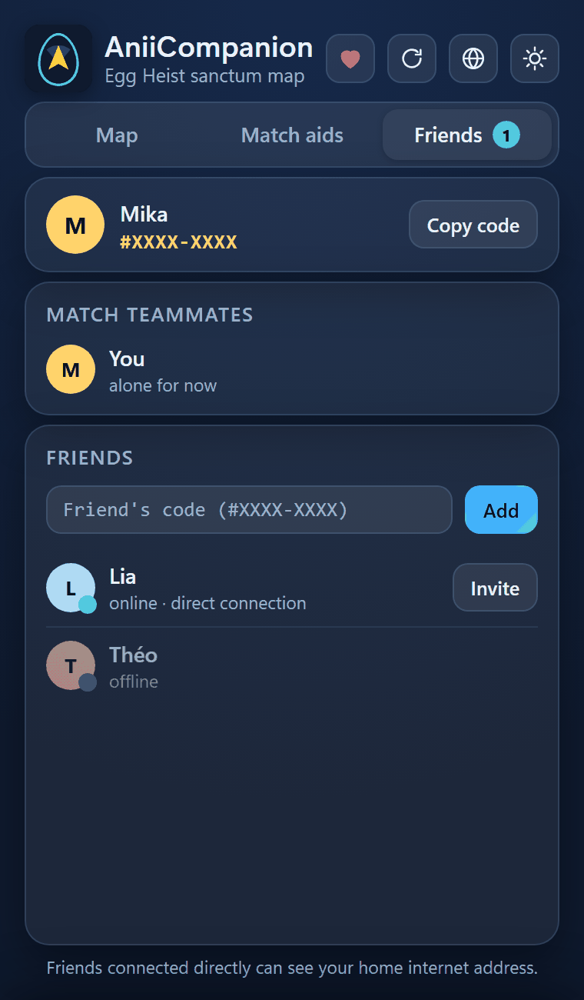
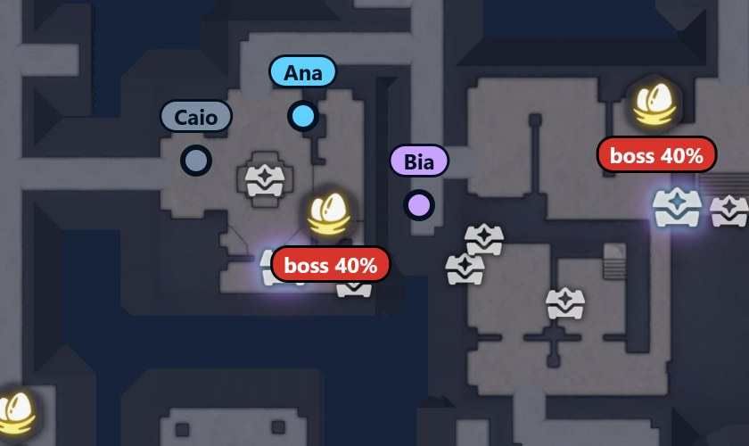

Playing in a party
See your friends on the map and pool what each of you finds.
What changes
What the party shares
People who play together see each other on the map and pool what each one finds.
- Friends on the mapEach friend is a dot with a name, in real time.
- Nests and eggsA nest one of you checked up close turns gray for both. A dropped egg shows on the other’s map.
- Opened chestsA rare chest your friend opens gets a ✓ on your map.
- Rich rooms and PrismanaEvery chest your friend opens helps the app learn more.
You swap a short code with your friend, and that is it.
First time only
How do I add a friend?
Both of you need AniiCompanion open.
- Find your codeOn the “Friends” tab, at the top, in the format #XXXX-XXXX. Click “Copy code”.
- Swap codesSend yours over WhatsApp or Discord and ask for theirs. Whoever receives it pastes it into “Friend's code (#XXXX-XXXX)” and clicks “Add”.
- Wait for the requestThe app says “Request sent. They need to have AniiCompanion open (the request lasts 2 minutes).”On your friend’s app it reads “wants to be your friend”, with “Accept” and “Decline”.
- Check the 3 picturesBoth apps show “You and … are now friends” and 3 pictures, each with a word under it. Confirm with your friend, in a chat (on WhatsApp, for example), that the pictures are identical, even if their app is in another language. That makes sure nobody is impersonating them.Same: click “They match”. Different: click “They differ”, because someone may be in the middle. The app says “Friendship removed: the words didn't match. Ask your friend for their code again.”

Identity
Your in-game name
It is the name your friend sees next to your dot.
- Through the Esc menuWith AniiCompanion open, open the game menu with Esc for a few seconds. The app reads your name there and asks “Your in-game name is …?” Click “Use”.
- By handAt the top of the Friends tab, type it into “Your in-game name”, up to 24 letters.
Every match
How do I invite a friend to the party?
Only people in the party show on the map.
- See if they are onlineIn the “Friends” list, their row says “online · direct connection” or “online · via relay”. Both work. “offline” means their app is closed.
- Click “Invite”The button is on their row.
- Your friend clicks “Join”They see “invited you to the party”. Then the “Match Teammates” box lists you both, with “in the party” under each name. While you are alone it says “alone for now”. To leave, click “Leave party”.
The party’s positions and nests start from zero in every new match.
Version
Minimum version
To swap nests and eggs, you both need that version. The app tells you when there is a new one, with “New version 0.2.17 · Update”. How to update
Privacy
What others see about you
Friends connected directly see your home internet address (IP). The public meeting servers see the IP and the time, but not the content, which is encrypted.
On the map
How a friend shows on your map
You show on theirs the same way.

- Blue dot with a name: your friend, in real time.
- Lilac dot: a second friend in the party uses another color.
- Gray dot: more than 15 seconds without a position, because they left the sanctum or lost the connection. It stays where they were.
- Arrow on the edge: your friend is outside the visible part and it points to them.
Nests checked up close, eggs dropped on the floor and chests opened by your friend also show on your map.